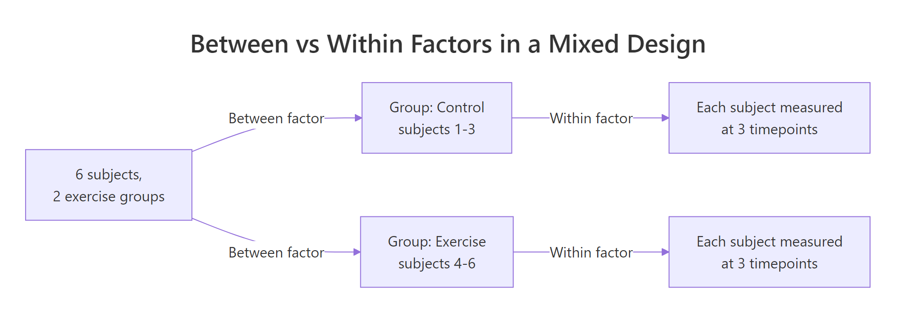
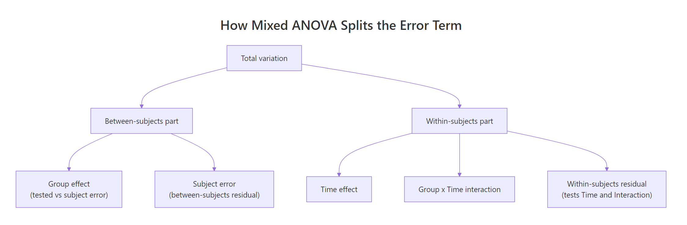
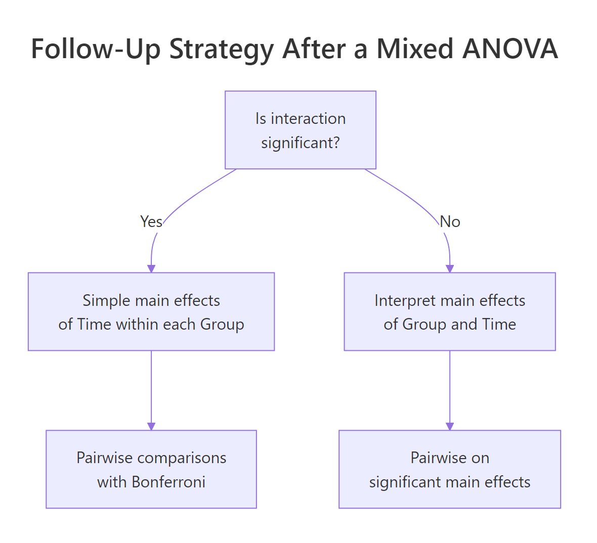

Mixed ANOVA in R: Combine Between-Subjects and Within-Subjects Factors
A mixed ANOVA tests one outcome against at least one between-subjects factor (different people in each group) and at least one within-subjects factor (the same person measured repeatedly). It combines the logic of independent-groups and repeated-measures ANOVA in a single model, using separate error terms for the between and within parts.
What is a mixed ANOVA and when should I use it?
Imagine you run a small study: twelve people are split into a control group and an exercise group, and everyone's anxiety is measured at baseline, at week 6, and at week 12. Group is a between-subjects factor (each person belongs to only one group). Time is a within-subjects factor (every person is measured at every time). A mixed ANOVA is the single test that asks, "Does anxiety change over time, and does that change depend on the group?"
Three F rows tell a clear story. Group differs overall (p = .004), anxiety changes across time (p < .001), and the interaction is significant (p < .001), so the time pattern is not the same in both groups. The generalized eta-squared column (ges) says the interaction explains 56% of variance, which is large by Cohen's rule-of-thumb.

Figure 1: Between factors split subjects into groups; within factors measure each subject multiple times.
The split-plot metaphor from agriculture is the cleanest analogy. A field is divided into "plots" (subjects), and each plot is randomly assigned to a fertiliser (the between factor). Then each plot is further split into strips receiving different irrigation levels (the within factor). You end up with two layers of variation to explain: plot-to-plot and strip-within-plot.
Try it: A study measures reading speed for 20 children, 10 taught with Method A, 10 with Method B, at weeks 1, 4, and 8. Name the between-subjects factor, the within-subjects factor, and how many rows the long-format data should have.
Click to reveal solution
Explanation: Method varies across subjects (each child gets one method), Week varies within each subject (each child measured three times). Long format has one row per subject per time, so 20 × 3 = 60.
How do I shape data for a mixed ANOVA in R?
R's repeated-measures tools expect long format: one row per observation, with columns for subject id, each factor, and the outcome. If your data comes out of a spreadsheet in wide format (one row per subject, time points as columns), you need to reshape it before fitting the model. The helper that does the heavy lifting is tidyr::pivot_longer().
Each subject now occupies three rows, one per timepoint. The subject column is already a factor (we built it that way in the first block) and time is coerced to a factor via mutate(). Both details matter, if subject is left as an integer, ezANOVA will treat it as numeric and silently give you the wrong answer.
subject <- 1:n as numeric. ezANOVA will either refuse to run or, worse, treat subject as a covariate and return nonsense. Wrap it in factor() before you fit.str() gives the one-shot sanity check: subject is a factor with 12 levels (one per person), group has 2 levels, time has 3. The data is 36 rows long (12 subjects × 3 timepoints).
Try it: Convert this small wide frame ex_wide to long and confirm it has 12 rows.
Click to reveal solution
Explanation: pivot_longer() collapses the three phase columns into two: one holding the phase name, one holding the score. Four subjects × three phases = 12 rows.
How do I fit a mixed ANOVA and read the output?
ez::ezANOVA() is the workhorse for factorial designs that mix between- and within-subject factors. You pass it four things: the data frame, the dependent variable, the subject id column (wid), and vectors of between and within factor names. Type-3 sums of squares (type = 3) is the safe default when the design is (or might be) unbalanced.
The $ANOVA table is the headline. Notice that group has denominator df = 10 while time and group:time have df = 20, these are the two different error terms at work. $Mauchly's Test for Sphericity tells you whether the within-subjects variance structure is well-behaved. $Sphericity Corrections gives you Greenhouse-Geisser (GG) and Huynh-Feldt (HF) adjusted p-values in case sphericity is violated.

Figure 2: Mixed ANOVA splits variation into a between-subjects part and a within-subjects part, each with its own error term.
The F-ratio for the between factor uses subject-level variability as its denominator, because subjects are the unit that differs between groups:
$$F_{\text{between}} = \frac{MS_{\text{group}}}{MS_{\text{subject(group)}}}$$
The F-ratios for the within factor and the interaction use the residual within-subjects variability, because those comparisons happen inside subjects:
$$F_{\text{within}} = \frac{MS_{\text{time}}}{MS_{\text{time} \times \text{subject(group)}}}$$
Where:
- $MS_{\text{group}}$ = mean square for the between-subjects factor
- $MS_{\text{subject(group)}}$ = variability between subjects inside each group
- $MS_{\text{time}}$ = mean square for the within-subjects factor
- $MS_{\text{time} \times \text{subject(group)}}$ = residual, roughly the leftover wiggle after subject-level change patterns are accounted for
If you're not interested in the math, skip ahead, the practical takeaway is simply that ezANOVA() builds these ratios for you and the denominator degrees of freedom in the table tell you which error term was used.
Try it: Using fit1$ANOVA, pull out just the p-value for the group:time interaction.
Click to reveal solution
Explanation: filter() picks the row and pull() extracts the single p-value as a scalar.
Which assumptions matter and how do I handle violations?
Mixed ANOVA inherits assumptions from its parents. From one-way ANOVA: no influential outliers and roughly normal residuals inside each cell. From independent-groups ANOVA: homogeneity of variance across the between-groups. From repeated measures: sphericity of the within-subjects covariance structure. The ezANOVA output already reports Mauchly's test and the GG/HF corrections, so your main job is to check the first three by hand.
Every cell has N = 6 and a Shapiro-Wilk p-value well above .05, so normality is plausible. When Shapiro fails at small N you can usually trust the F-test anyway, ANOVA is robust to mild normality violations when cell sizes are equal. Pay more attention to outliers that shift the cell mean by more than a standard deviation.
Bartlett's test at each timepoint checks whether the two groups have similar variance. All three p-values are comfortably non-significant, so the between-groups variance is homogeneous.
ezANOVA reports NaN for Mauchly's W and you can ignore the GG/HF columns.Try it: Suppose Mauchly's W = 0.40 with p = .02 for a within factor with 4 levels. Is GG correction needed? Assign TRUE or FALSE.
Click to reveal solution
Explanation: Mauchly's p < .05 rejects sphericity, so you should use the Greenhouse-Geisser (or Huynh-Feldt) corrected p-value for the within and interaction effects.
How do I follow up a significant interaction?
A significant group:time interaction says "the time effect depends on which group you're in." That makes the individual main effects misleading, you cannot describe anxiety as simply "dropping over time" because it drops much more steeply in the exercise group. The right move is to decompose the interaction into simple main effects: test the time effect within each group separately.

Figure 3: When the interaction is significant, test simple main effects within each level before interpreting main effects.
emmeans is the cleanest tool for the job. You fit the same model with base aov() (emmeans understands the Error() formula), then ask for marginal means grouped by both factors and let emmeans do the contrasts.
In the control group, only the t1 vs t3 change is significant (p = .004), anxiety drifts down slightly over twelve weeks. In the exercise group, every pairwise difference is highly significant, anxiety drops sharply at each step. That's the interaction story in plain language: exercise accelerates the time-related drop.
emmeans uses the mixed ANOVA's within-subject error term and applies the correction for you.Try it: From the emmeans output above, which group shows a significant drop between consecutive timepoints (t1 vs t2)?
Click to reveal solution
Explanation: In the control group, t1 vs t2 has p = .357 (not significant). In the exercise group, t1 vs t2 has p < .0001 after Bonferroni correction.
How do I report and visualize mixed ANOVA results?
A mixed ANOVA write-up has three moving parts: the F statistics, the effect sizes, and a clear plot. The convention is to report the generalized eta-squared ($\eta^2_G$) because classical partial eta-squared is not comparable across mixed designs. ezANOVA gives you generalized eta-squared in the ges column out of the box.
The plot makes the interaction visible immediately. Two nearly parallel lines would suggest no interaction; here the exercise line has a much steeper negative slope than the control line. Error bars (mean ± SE) show that the groups start at the same level at t1 and diverge over time, which is exactly what the interaction test detected.
A clean APA-style sentence mirrors the table rows:
A 2 (group: control, exercise) × 3 (time: t1, t2, t3) mixed ANOVA revealed a significant interaction, F(2, 20) = 40.71, p < .001, $\eta^2_G$ = .56. Simple main effects showed that anxiety decreased significantly across all three timepoints in the exercise group (all p < .001, Bonferroni corrected), while only the t1-t3 contrast reached significance in the control group (p = .004).
Try it: From the ANOVA table printed earlier, write the APA sentence for the main effect of time.
Click to reveal solution
Explanation: Always report F, both degrees of freedom, p (or "< .001"), and an effect size. When an interaction is significant, add the caveat that main effects should be interpreted cautiously.
Practice Exercises
Exercise 1: Fit and interpret a 2x2 mixed ANOVA
Using the sleep_df dataset below (6 subjects, 2 sleep conditions, measured pre and post), reshape to long, fit a mixed ANOVA, and report whether the interaction is significant.
Click to reveal solution
Explanation: The interaction is highly significant, caffeine reduces sleep post-intervention while placebo does not. With a 2-level within factor, sphericity is automatically satisfied so GG/HF corrections are not needed.
Exercise 2: Follow up the interaction and produce the plot
Using my_fit and my_long from Exercise 1, decompose the interaction with emmeans and draw the interaction plot.
Click to reveal solution
Explanation: Caffeine causes a sharp, significant drop in sleep from pre to post; placebo shows essentially no change. The plot's diverging lines match the significant interaction.
Exercise 3: Sphericity violation changes the conclusion
Simulate a 2 × 4 mixed dataset where the within-subject variances are very unequal, fit the ANOVA, and compare uncorrected vs Greenhouse-Geisser p-values for the within and interaction effects.
Click to reveal solution
Explanation: Mauchly's test rejects sphericity (p < .001), so the uncorrected p-values are misleading. The Greenhouse-Geisser correction shrinks the degrees of freedom and gives a more honest p. When sphericity is violated, always use the corrected row for final inference.
Complete Example
This is the entire mixed ANOVA workflow on the anxiety dataset, start to finish.
The final report: a 2 × 3 mixed ANOVA revealed a significant group × time interaction, F(2, 20) = 40.71, p < .001, $\eta^2_G$ = .56. Simple main effects in the exercise group were significant at every pairwise step (all p < .001, Bonferroni), while only t1 vs t3 was significant in the control group (p = .004). Sphericity was satisfied (Mauchly's W = .887, p = .61).
Summary
| Concept | Key takeaway | Function / Package |
|---|---|---|
| Design recognition | Between factor = different people per level; within factor = same person repeated | , |
| Data shape | Repeated-measures tools need long format with factor subject id | tidyr::pivot_longer() |
| Model fit | ezANOVA() handles mixed designs and reports sphericity out of the box |
ez::ezANOVA() |
| Error terms | Between effects tested against subject variability; within effects against residual | , |
| Sphericity | Check Mauchly; if violated, report Greenhouse-Geisser p | ez::ezANOVA() |
| Follow-up | Significant interaction → simple main effects, not pooled main effects | emmeans::emmeans() |
| Effect size | Report generalized eta-squared ($\eta^2_G$), not partial | ges column |
| Reporting | Include F, both df, p, effect size, and a group × time plot | ggplot2::stat_summary() |
References
- Lawrence, M. A. (2016). ez: Easy Analysis and Visualization of Factorial Experiments. CRAN. Link
- Lenth, R. V. (2025). emmeans: Estimated Marginal Means. CRAN. Link
- Field, A., Miles, J., & Field, Z. (2012). Discovering Statistics Using R (Ch. 14). Sage.
- Fox, J., & Weisberg, S. (2019). An R Companion to Applied Regression, 3rd ed. Sage.
- Bakeman, R. (2005). Recommended effect size statistics for repeated measures designs. Behavior Research Methods, 37(3), 379-384. Link
- Greenhouse, S. W., & Geisser, S. (1959). On methods in the analysis of profile data. Psychometrika, 24, 95-112.
- Mauchly, J. W. (1940). Significance test for sphericity of a normal n-variate distribution. Annals of Mathematical Statistics, 11, 204-209.
- Huynh, H., & Feldt, L. S. (1976). Estimation of the Box correction for degrees of freedom from sample data in randomized block and split-plot designs. Journal of Educational Statistics, 1, 69-82.
Continue Learning
- Repeated Measures ANOVA in R, the within-subjects-only version; start here if all your factors are repeated within subjects.
- Two-Way ANOVA in R, the two-between-factors cousin; use this when nothing is measured twice on the same subject.
- Post-Hoc Tests After ANOVA, deeper dive on pairwise comparisons and correction methods like Bonferroni, Tukey, and Holm.